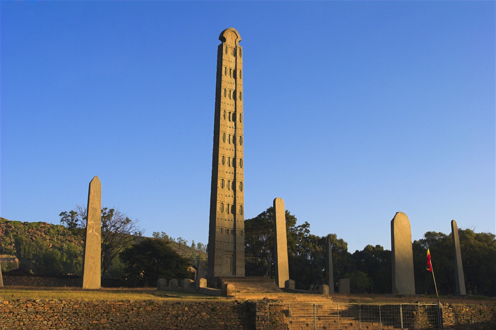
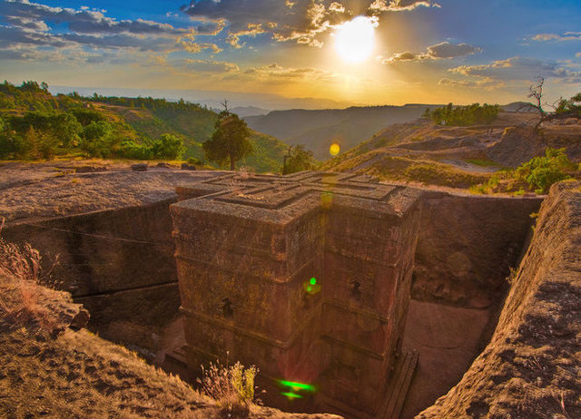

Ethiopian architecture continued to expand from the Aksumite style, but also incorporating new traditions with the expansion of the Ethiopian state. Styles incorporated more wood and rounder structures in commoner's architecture in the center of the country and the south, and these stylistic influencies were manifested in the slow construction of churches and monasteries. Throughout the medieval period, Aksumite architecture and influences and its monolithic tradition persisted, with its influence strongest in the early medieval (Late Aksumite) and Zagwe periods (when the churches of Lalibela were carved)


HOME
Assignment 1
Assignment 2